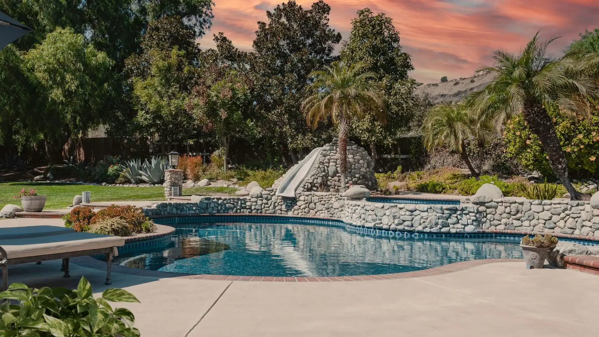

Oceanside
9.8 miles west

North County San Diego
What to know about Vista before you buy a home here.
Neighborhoods
Vista splits into four parts. Here is what you will find in each one.
North Vista
The older neighborhoods north of Highway 78. The City has its own Townsite Specific Plan for the area.
The Antique Gas & Steam Engine Museum is at 2040 N. Santa Fe Ave. and the county's Rancho Guajome Adobe is at 2210 N. Santa Fe Ave.
Downtown Vista
The heart of the city, just north of Highway 78, with Vista Village's dining, entertainment and shops.
The Arts and Culture District, one of six subdistricts in the Downtown Vista Specific Plan.
Another of the six subdistricts, around City Hall at 200 Civic Center Drive.
West Vista
About 143 acres of hillsides and rolling hills, south of Mar Vista Drive and north of Lupine Hills Road. The City adopted a specific plan to keep its rural setting.
South and East Vista
Has its own City specific plan, in the southern and eastern part of the city, on part of the old Rancho Agua Hedionda y los Monos.
The City's employment center, in the southern part of Vista, adopted as a specific plan in 1993.
Two small subdivisions near Sycamore Avenue and Green Oak Road, close to Agua Hedionda Creek.
The Buena Creek SPRINTER station is at 2103 S. Santa Fe Ave.

Leticia's Picks
[Leticia: where she sends people for coffee, dinner and a walk.]
Living Here
The places people in Vista go on a weekend.
The City's park at 1200 Vale Terrace Drive, with ballfields, tennis courts and a gym.
An open-air theater in Brengle Terrace Park with Broadway musicals each summer.
The gardens inside Brengle Terrace Park, with plant sales and events through the year.
The City's waterpark at 101 Wave Drive.
Antique Gas & Steam Engine Museum
A hands-on museum on N. Santa Fe Ave. with a tractor show each fall.
The City's adobe at 640 Alta Vista Drive, with guided tours.
A county park with an 1850s adobe hacienda and trails, on N. Santa Fe Ave.
Open every Saturday since 1981, at the County Courthouse on S. Melrose Drive.
Shopping and Dining
Shops, restaurants and events in the historic downtown, with a rewards app for more than 400 local businesses.
Local farmers and food makers every Saturday morning.
Local makers and artists, listed by Downtown Vista.
A shopping center at 1711 to 1861 University Drive, listed by the Vista Chamber of Commerce.
A brewery tap house at 631 S. Santa Fe in downtown.
A tavern on S. Santa Fe Ave. with a patio and Thursday trivia.
A downtown pub.
Named on the Downtown Vista events calendar.
Schools
Two school districts serve Vista, and the address decides which one. Confirm with the district before you buy.
Serves most of the city, kindergarten to grade 12. Find your school.
Serves a small part of the city, kindergarten to grade 12. District site.
The Commute
Three SPRINTER stations, Highway 78 through the middle of the city, and McClellan-Palomar Airport close by.
240 N. Santa Fe Rd.
810 Phillips St.
2103 S. Santa Fe Ave.
Road miles from Vista City Hall, without traffic.
Before You Buy
Check these on any home before you write an offer.
01
Community Facilities Districts add to some tax bills. Read the county tax bill for the address at the County Assessor.
02
Much of Vista is hillside. Check the address on CAL FIRE's fire hazard severity zone maps.
03
Creeks run through the city, including Agua Hedionda Creek. Read FEMA's flood maps for the address.
04
Vista Irrigation District serves most of the city, and the Vallecitos and Rainbow water districts serve parts of it. Check the water service area. Schools depend on the address too.

Your Vista Agent
Tell Leticia which Vista neighborhoods you are weighing, and she will go through each one with you.
City services, parks and planning
Local businesses, events and the Christmas parade
Downtown events, shops and the craft beverage map
Property records and tax information
Nearby